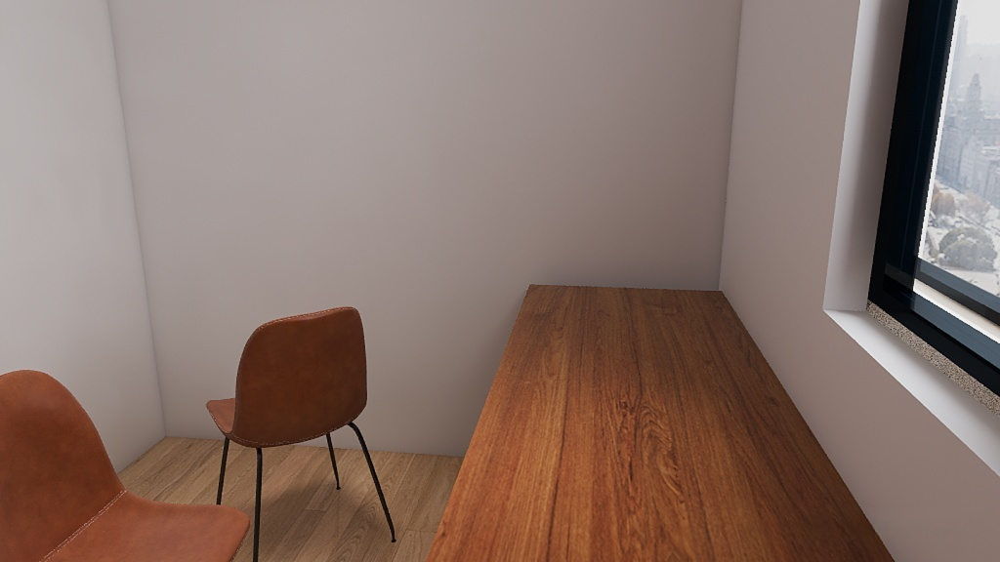
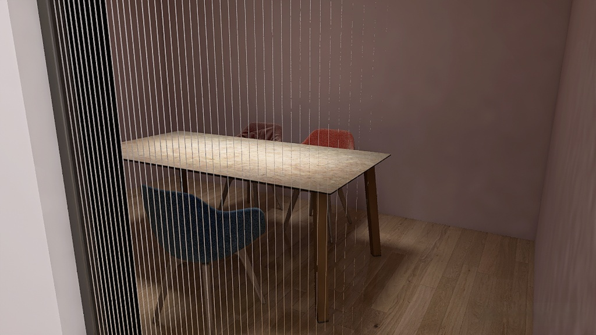

⌂
Butuh Tempat Kerja Profesional
Tidak semua aktivitas bisnis ideal dilakukan dari rumah atau kafe. Anda membutuhkan ruang kerja privat untuk fokus, meeting, dan menerima klien.
Mulai dari ruang kerja privat siap pakai, alamat domisili usaha resmi untuk PT Perseorangan maupun CV, hingga pemeriksaan awal calon mitra bisnis dalam satu lokasi terpadu.
Ada berbagai kebutuhan operasional dan legalitas yang perlu diperhatikan agar bisnis dapat berjalan dengan lebih terarah.
Tidak semua aktivitas bisnis ideal dilakukan dari rumah atau kafe. Anda membutuhkan ruang kerja privat untuk fokus, meeting, dan menerima klien.
Pengusaha membutuhkan alamat domisili usaha resmi yang memenuhi ketentuan administrasi pengurusan PT Perseorangan maupun CV.
Pemeriksaan awal izin usaha, rekening tujuan, dan riwayat kontak calon mitra membantu Anda mengambil keputusan kerja sama lebih hati-hati.
Pilih paket layanan ATS-Bizhub di Cisoka sesuai skala operasional usaha Anda.

Ruang kantor privat ukuran 3m x 3m (9 m²) untuk kapasitas 2–4 orang, sudah termasuk listrik, WiFi High-Speed, dan akses ruang meeting.

Alamat domisili usaha resmi untuk pengurusan PT Perseorangan & CV, termasuk layanan penerimaan surat/paket serta akses ruang meeting.

Cek keabsahan izin usaha, kecocokan nama rekening tujuan transfer, dan riwayat nomor kontak calon mitra sebelum bertransaksi.
Cocok untuk freelancer, konsultan, kontraktor, maupun tim kecil (2–4 orang) yang membutuhkan ruang kerja fisik dengan biaya operasional terukur.
Bangun kredibilitas bisnis Anda menggunakan alamat komersial resmi di Perumahan Surya Jaya Indah Blok BB2/36 tanpa harus menyewa ruang fisik penuh setiap hari.
Lakukan pemeriksaan awal terhadap informasi calon vendor, klien, atau rekan bisnis sebelum mentransfer dana atau menandatangani kontrak.
Memeriksa status dan kesesuaian data legalitas/izin usaha entitas bisnis melalui sumber resmi yang relevan.
Memverifikasi kesesuaian nama pemilik rekening bank tujuan transaksi dengan identitas perusahaan atau pihak terkait.
Menelusuri riwayat dan jejak digital nomor telepon/WhatsApp calon mitra sebelum Anda bertransaksi.
Gratis 1x pemeriksaan untuk klien penyewa Virtual Office tahunan ATS-Bizhub.
Ajukan Pre-Screening MitraAlur pemesanan dan survei lokasi dirancang ringkas dan transparan.
Sampaikan pilihan layanan (Private Office, Virtual Office, atau Pre-Screening Mitra) ke tim kami.
Jadwalkan kunjungan langsung ke Blok BB2/36 Cisoka pada hari Sabtu atau Minggu sesuai janji temu.
Konfirmasi identitas penyewa/perusahaan serta penyelesaian biaya paket atau deposit.
Ruang kantor siap digunakan, alamat domisili aktif, atau laporan hasil screening dikirimkan.
Lokasi strategis di Kabupaten Tangerang dengan akses cepat menuju pusat pemerintahan dan jalur tol.
Dilengkapi ruang kerja ukuran 3m x 3m (9 m²), WiFi High-Speed, Pantry, serta legalitas SHM/IMB, NIB, dan izin domisili usaha resmi.
Tersedia ruang meeting ukuran 3m x 4m (kapasitas 4 orang) untuk pertemuan klien dengan akses mudah dari jalur utama Tangerang.
Jawaban atas pertanyaan umum seputar sewa kantor, virtual office, dan pre-screening mitra.
Hubungi tim ATS-Bizhub sekarang untuk cek ketersediaan unit Private Office, pendaftaran Virtual Office, atau jadwal survei akhir pekan.
Chat WhatsApp: 0813-7731-6667 →